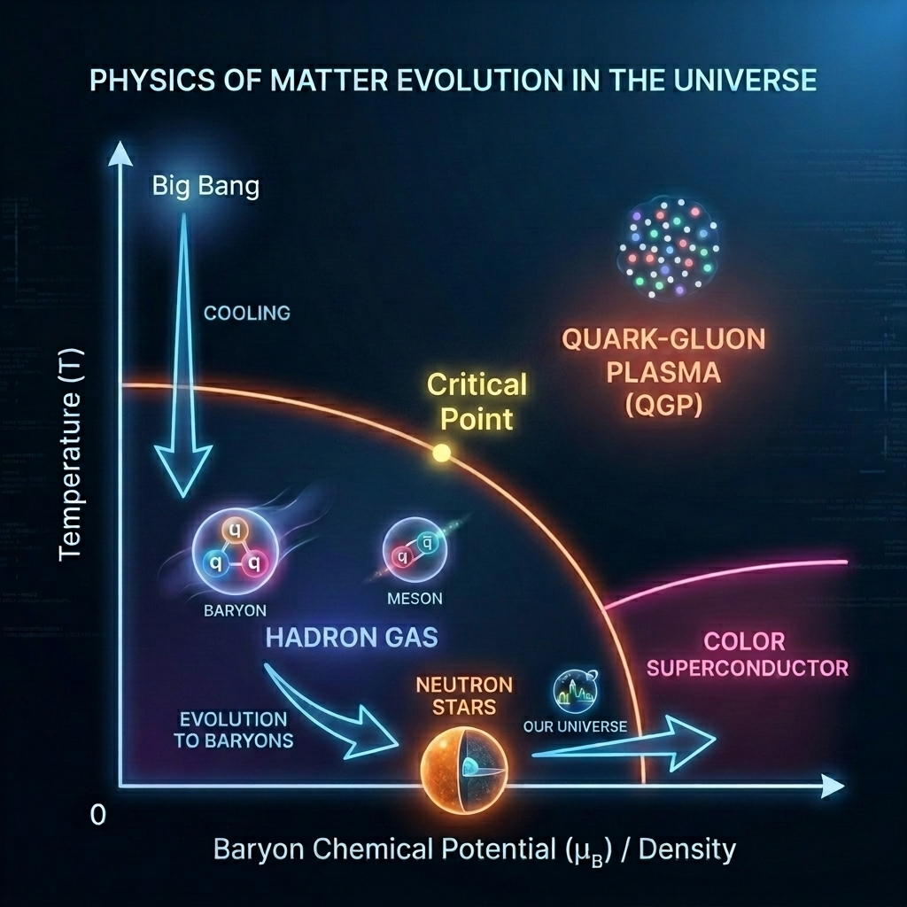

J-PARC における HypTPC を用いたハドロン実験
本研究グループでは、J-PARC ハドロンホールにおいて、 クォークから物質がつくられるしくみを明らかにすることを目指し、 ハドロン物理学のフロンティアに挑む実験研究を展開しています。
物質を構成する最も基本的な構成要素である クォークは、単独で存在することはできず、 常に複数のクォークが結合して ハドロン として閉じ込められた状態で存在しています。
通常のハドロンは、3つのクォークからなる バリオン（例：陽子・中性子）や、 クォークと反クォークの対からなる メソン に分類されます。
しかし、クォークにはたらく強い相互作用の基礎理論である 量子色力学（QCD）は、これらにとどまらず、 より複雑な構造をもつ エキゾチックハドロン ― たとえば、2つのクォークと2つの反クォークから成るテトラクォーク、 4つのクォークと1つの反クォークで構成されるペンタクォーク ― の存在をも予言しています。
近年、Belle（日本）や LHCb（ヨーロッパ）などの国際共同実験により、 これらエキゾチックハドロンの候補粒子が次々と発見され、物質の成り立ちに新たな視点が加わりつつあります。
我々は、バリオンやメソンといった通常のハドロンを超える存在である エキゾチックハドロンの性質を系統的に調べることで、 クォークがどのように束縛され、ハドロンを構成していくのか ― すなわち「ハドロン化のメカニズム」の核心に迫ろうとしています。
HypTPCグループ は、J-PARC のハドロンホールにおいて、 独自開発した三次元飛跡検出器 HypTPC（Time Projection Chamber） を駆使し、 最先端の実験手法を用いてエキゾチックハドロンの探索とその性質の解明に取り組んでいます。
三次元飛跡検出器HypTPCを用いたJ-PARC実験
我々は、三次元飛跡検出器 HypTPC（Time Projection Chamber） を用いて J-PARC において実験を行なっています。
以下の図は HypTPC の構造と、それを用いた実験プログラムの概要を示しています。 我々は、HypTPC を用いて 5つの実験（E42, E45, E72, E90, E104） を提案しています。
これらの実験は、いずれも エキゾチックハドロンと密接に関係した実験です。 各実験の詳細は、以下の実験提案書を参照してください。
- E42実験：Hダイバリオン探索実験（6クォーク状態はあるのか？）
- E45実験：ハドロン分光実験（ハイブリットバリオンの候補は？）
- E72実験：Λ*分光実験（エキゾチックハドロンの可能性大）
- E90実験：ΣNカスプ分光実験（重水素のようなストレンジダイバリオン？）
- E104実験：ダブルφ生成実験（グルーボールと関係？））
- LOI (to be submitted)：Θ+探索実験（uuddsbarペンタクォークはあるのか?）

図：HypTPC の構造と実験プログラムの概要
重イオン衝突実験
現在の J-PARC は陽子加速器として運用されていますが、将来的には陽子に加えて 重イオンビームの加速を実現する計画が進められています。 これが J-PARC-HI（Heavy Ion）プロジェクトです。
CERN（ヨーロッパ）の ALICE 実験や、アメリカ BNL の RHIC 加速器における実験では、 高エネルギー下での重イオン衝突により、クォークがハドロンから解放されて自由に存在する クォーク・グルーオン・プラズマ（QGP） の形成が観測されています。
すなわち、クォークとハドロンの間には、 高温・高密度環境下での相転移が存在すると考えられています。 クォークがハドロンに束縛される状態から、QGP という新たな相へと移行するこの現象は、 強い相互作用の本質に迫る鍵を握っています。
この「状態の変化」は、私たちに身近な 水の相転移を通じて直感的に理解することができます。 水は温度や圧力の変化によって、固体（氷）→ 液体（水）→ 気体（水蒸気）と形を変えます。 クォーク・ハドロン系も同様に、密度（∝ ケミカルポテンシャル μb）が 高くなると、クォークが閉じ込められた状態から解放され、QGP が生成されると考えられています。
これまでの超高エネルギー（高温）下での実験（CERN、BNL）では、 QGP への変化が連続的（クロスオーバー）な相転移であることが示唆されています。 しかし、QCD 相図（温度 T とケミカルポテンシャル μb による相図）における 高密度領域では、この転移が連続ではなく、 一定の条件を境に急激に状態が変わる 一次相転移が生じると考えられており、 その転換点が QCDクリティカルポイント（臨界点） として予想されています。
このように近年では、CERN における超高温実験に加え、 中高エネルギー領域で超高密度状態を実現可能な重イオン衝突実験 に注目が集まっています。 J-PARC-HI プロジェクトでは、1–19 AGeV（√sNN = 2–6.2 GeV）のエネルギー域において 重イオン衝突を実施し、原子核密度の 5〜10 倍に相当する 高密度状態を創出、その中でのハドロンの性質や変化を精密に調べます。
このエネルギー領域における研究は、J-PARC（日本）だけでなく、 アメリカ（RHIC-STAR（BES））、ドイツ（GSI-FAIR）、ロシア（NICA）などでも進行・計画されており、 世界的な研究の最前線として位置づけられています。
クォークからハドロンへの相転移が本当に一次相転移であるのか？
QCD クリティカルポイントは実在するのか？
これらは、未だ答えの見つかっていない根本的な問いです。
もしその存在が明確に確認されれば、強い相互作用の理解に革命をもたらし、
ノーベル賞級の成果となる可能性を秘めています。
我々は、J-PARC-HI 実験において 超高密度状態でのハドロン物理の解明に挑むとともに、 粒子間相関（Femtoscopy）を用いたハドロン間相互作用の研究も進めていく予定です。 また、これを契機としてアメリカBNLのSTAR実験、ドイツGSIのFAIR-CBM実験にも参画しています。
本プロジェクトはまだ始動したばかりですが、今後さらに発展させていく計画です。
J-PARC-HI におけるハドロン間測定に関する詳細はこちら → J-PARC-HI Femtoscopy
J-PARC-HI プロジェクト全体に関する詳細はこちら → J-PARC-HIのページ

図：QCD 相図